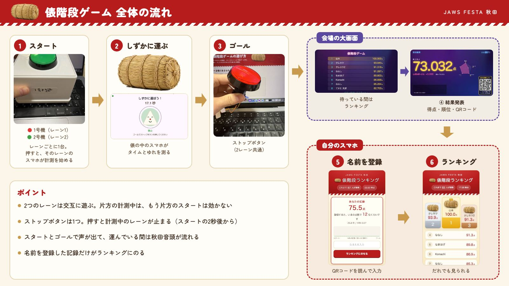
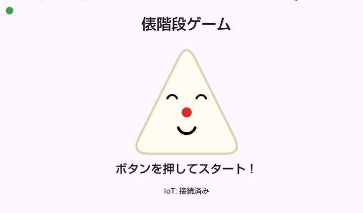
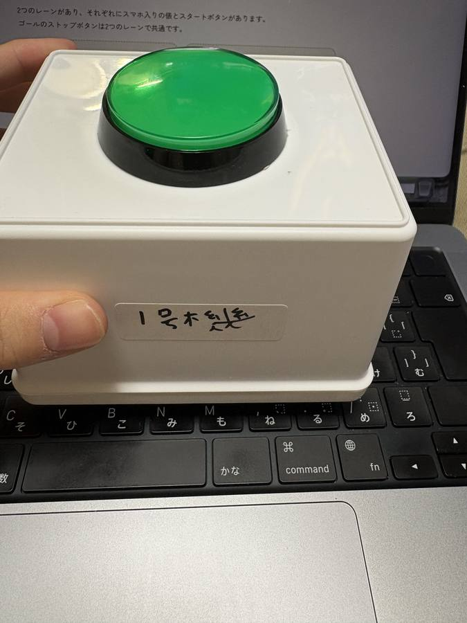
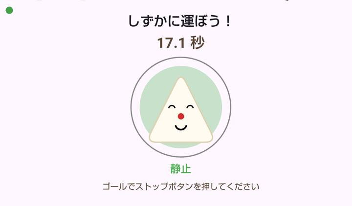
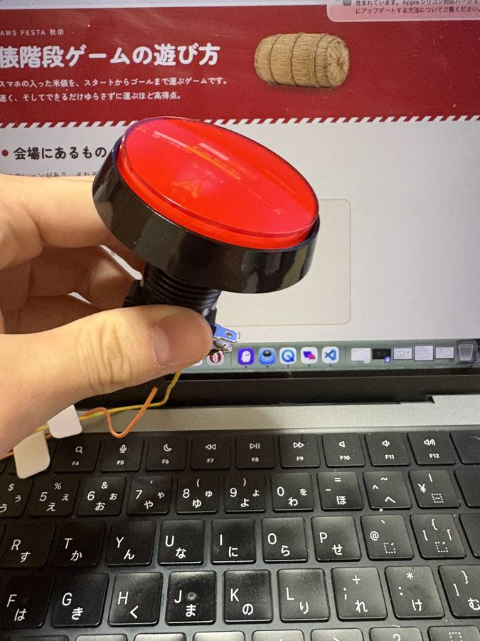
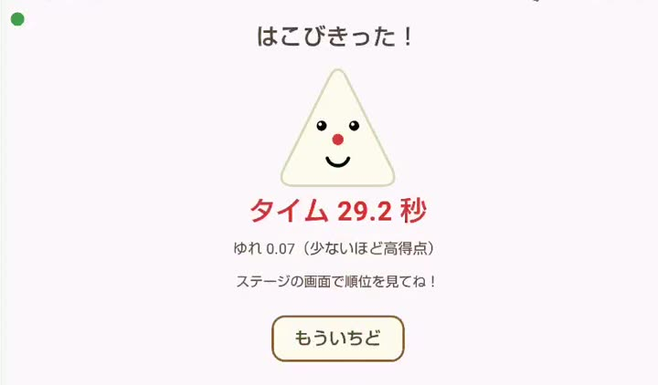
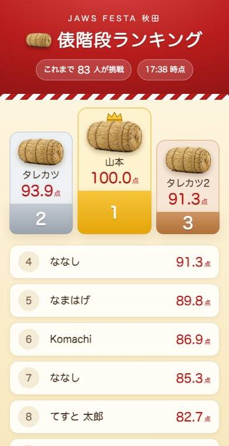
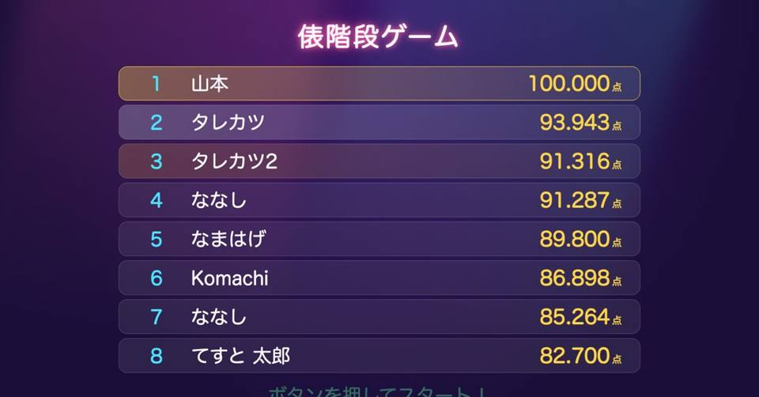

全体の流れ

キャラクター紹介
ぼくをずっと笑顔にしてね！
こめだわら おにぎりくん
米俵おにぎりくん
米どころ秋田の俵からやってきた、ちょっぴりこわがりなおにぎり。俵の中のスマホにすみついて、きみの運び方をじっと見ています。
- すみか
- 俵の中のスマホ
- とくい
- ゆれを見張ること
- チャームポイント
- 梅干しのおはな
- にがて
- ぐらぐらゆれること
- ゴールの口ぐせ
- 「はこびきった！」
運んでいる間、ゆれに合わせて表情がくるくる変わります。ゴールまで笑顔のままでいられるかな？
こぼれちゃう〜！」
遊び方
-
俵を持ってスタートに立つ

スマホにこの画面が出ていれば準備OK スマホに「ボタンを押してスタート！」と出ているのを確かめます。画面の左上の丸でレーンがわかります。
赤＝レーン1緑＝レーン2 -
スタートボタンを押す

緑のスタートボタン。レーンごとに1つ（箱に号機が書いてあります） スタートです！ の声のあと、秋田音頭が流れて計測が始まります。
-
しずかに運ぶ

運んでいる間の画面。タイムとゆれが見えます 画面のおにぎりの表情と色で、いまのゆれがわかります。緑のままを目指しましょう。
静止小さな揺れ揺れてる大きな揺れ！ -
ゴールでストップボタンを押す

赤のストップボタン。ゴールに1つ（2レーン共通） 
スマホにはタイムとゆれが出ます ゴールです！ おつかれさまでした。 の声で終わりです。
-
大きな画面で結果を見る
大画面の結果（約44秒・音なし）。「採点中…」のあと得点と順位が出て、次の画面でおにぎり先生のひとことが流れます。録画用に、実際の1回分のデータで再生しています。 得点と順位、「おにぎり先生」からのひとことが出ます。右下のQRコードは名前の登録用です。
-
QRコードで名前を登録する

自分のスマホで見るランキング 
待っている間の大画面にもランキングが出ます 大画面のQRコードを自分のスマホで読み、名前を入れるとランキングにのります。名前を入れなければ、記録はランキングに出ません。
音の演出
スタートとゴールで声が流れ、運んでいる間は秋田音頭が流れます。▶ で聞けます。
声にした理由
俵を持っていると、スマホの画面はほとんど見られません。始まりと終わりを耳でわかるようにして、まわりで見ている人にも「いまスタートした」「ゴールした」が伝わるようにしました。
声の作り方
AWS の音声合成サービス Amazon Polly の、自然に話す日本語の声で作りました。3種類の声と2通りの言い回しで6つの候補を作って聞き比べ、いちばん自然だった女性の声「Tomoko」を選びました。「スタート！」だけだと抑揚が不自然だったので「スタートです！」にし、「よーい」は外しています。
秋田音頭にした理由
秋田のイベントなので、運んでいる間は地元の民謡でお祭りの雰囲気を出しています。スタートの声が終わってから流れ始め、声が聞き取れるよう少し小さめにし、ゴールで止まります。
スタッフ向けのメモ
- 1レーンずつ 片方のレーンが計測中のときは、もう片方のスタートボタンは効きません。スマホに「もう一方のレーンが計測中です」と出ます。
- ストップは2秒後から スタートしてすぐのストップは、押しまちがいとして無視されます。
- 結果は20秒 スマホの結果画面は20秒でスタート画面にもどります。次の人はそのままスタートボタンでOK。
- スマホは充電しながら 画面は点けたままになるので、充電しながら使ってください。